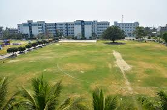
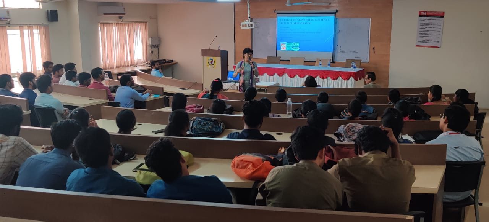

| GURUNANAK INSTITUTE OF TECHNOLOGY | COLLEGE | UNDER GRADUATION | POST GRADUATION | |||
| AFFILIATED BY MAKAUT | TENDER | ADMISSION | ADMISSION | |||
| HOME | ABOUT US | ACADEMICS | DEPARTMENTS | FACULTIES | RESEARCH | LIBRARY |
|  READ MORE |
Guru Nanak Institute of Technology is instituted with a vision to empower the aspiring professionals with the technological knowledge and professional expertise under the aegis of JIS Group Educational Initiatives in the year 2003. This technical campus offers undergraduate and postgraduate courses under MAKAUT (Formerly known as WBUT) and some courses are NBA Accredited. The Institute is approved by AICTE and accredited by UGC, NAAC and located in one of the prime locations in North Kolkata near Sodepur. The Institute offers latest technology oriented courses as per industry trends and nurtures creativity, innovations and research initiatives both at faculty and student levels to enrich and enhance the teaching learning process. |
|||
|
PLACEMENTS AND TRAININGS:::-- Your education doesn't stop at the classroom door. Student activities are a vitalpart of the GNIT experience complementing your studies and creating oppurtunities for friendship & self-discovery. |
READ MORE |
|||
|  READ MORE |
Latest Research::--- From Laboratory study to archival research to investigation in the field, GNIT students engage in world class research across all disciplines and make ground making contributions to their fields. |
|||
|
||||
| CONTACT US | QUICK LINKS | EXAMS | 157/F Nilgunj road, Panihati, Kolkata-700114, West Bengal |
NIRF Gallery | WBJEE JEE MAINS |
|---|---|---|---|---|
| Phone : +91 9432012681 | Student Hand Book Human Values and Professional Ethics |
CEE AMPAI GATE |
||
| Email : info.gnit@jisgroup.org | ||||
| HOME | ABOUT US | ACADEMICS | DEPARTMENTS | FACULTIES | RESEARCH | LIBRARY |